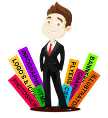

A Empresa

1- A empresa (nome da empresa) foi fundada no ano de (ano da fundação, por exemplo, 1998) na cidade (nome da cidade) pelo Senhor (nome do fundador) e sua principal missão é oferecer soluções para empresas de e-commerce e Internet. Atualmente contamos com XX funcionários e nossos principais clientes são (coloque aqui o que sua empresa vende ou oferece).
2- Fundada em (ano da fundação, por exemplo, 1998) pelo Senhor (nome do fundador), a principal missão da empresa (nome da empresa) é oferecer (coloque aqui o que sua empresa vende ou oferece). Nossos principais clientes são (nome dos clientes atuais) e atualmente contamos com XX funcionários.
3- A missão da empresa (nome da empresa) é fornecer soluções para empresas de e-commerce e Internet. Nossos principais clientes são (coloque aqui o que sua empresa vende ou oferece). Fundada em (ano da fundação, por exemplo, 1998) pelo Senhor (nome do fundador), na cidade (nome da cidade), atualmente contamos com (quantidade de pessoas que trabalham na empresa) funcionários.
2- Fundada em (ano da fundação, por exemplo, 1998) pelo Senhor (nome do fundador), a principal missão da empresa (nome da empresa) é oferecer (coloque aqui o que sua empresa vende ou oferece). Nossos principais clientes são (nome dos clientes atuais) e atualmente contamos com XX funcionários.
3- A missão da empresa (nome da empresa) é fornecer soluções para empresas de e-commerce e Internet. Nossos principais clientes são (coloque aqui o que sua empresa vende ou oferece). Fundada em (ano da fundação, por exemplo, 1998) pelo Senhor (nome do fundador), na cidade (nome da cidade), atualmente contamos com (quantidade de pessoas que trabalham na empresa) funcionários.